GAZPACHO
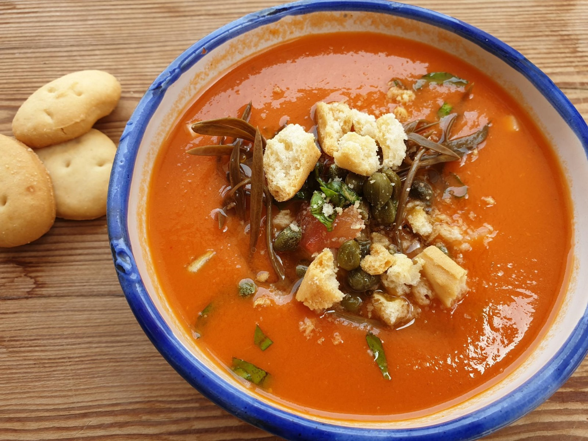
El gazpacho es una sopa fría hecha a base de tomate, pimiento, pepino, ajo, pan, aceite de oliva, agua y vinagre. Originario de Andalucía, su historia se remonta a los campesinos andaluces.
TERNASCO DE ARAGÓN
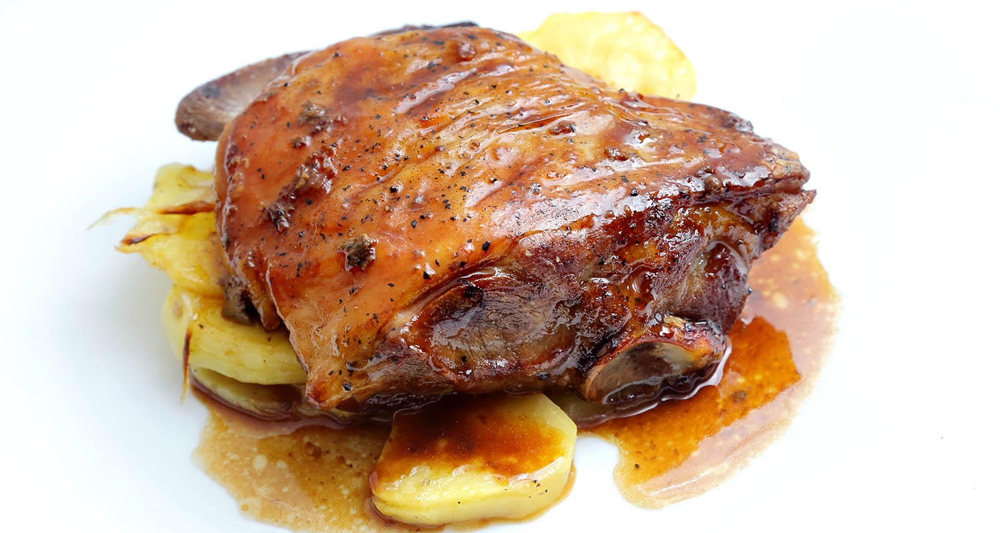
El ternasco es cordero joven asado, generalmente al horno con patatas. Este plato es un símbolo de las tradiciones pastoriles aragonesas.
FABADA
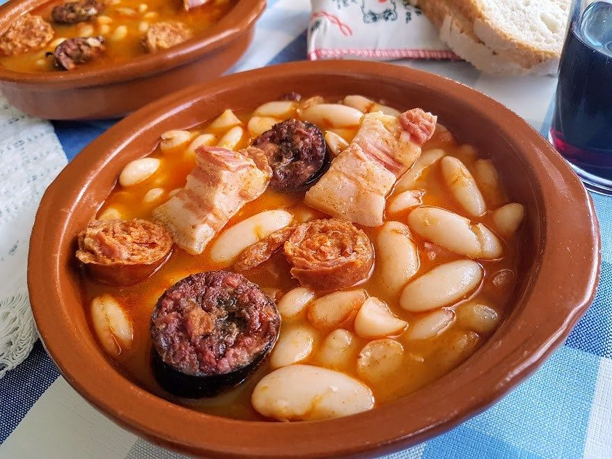
La fabada es un guiso de fabes cocinadas con chorizo, morcilla y tocino. Este plato es típico de la cocina asturiana.
PISTO MONTAÑÉS
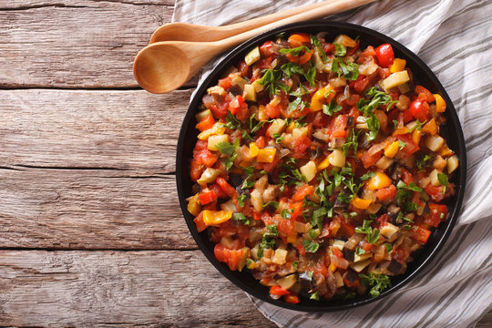
El pisto montañés es una mezcla de verduras sofritas como calabacín, berenjena, pimiento y tomate. Es típico de Cantabria.
COCHINILLO ASADO
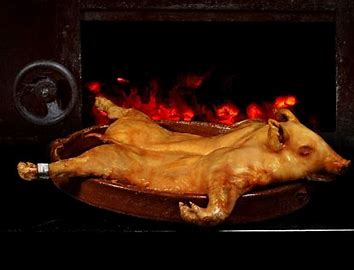
El cochinillo asado es un cerdo lechal cocinado al horno de leña hasta que la piel queda crujiente y la carne tierna. Es un plato típico de Segovia y tiene raíces que se remontan a la época romana.
CREMA CATALANA

La crema catalana es un postre hecho con leche, yemas de huevo, azúcar, harina de maíz y piel de limón. Se caracteriza por su capa superior de azúcar caramelizado.
MIGAS
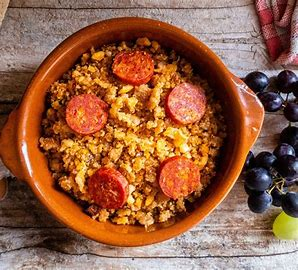
Las migas extremeñas son un plato humilde de origen pastoril, elaborado con pan duro frito en aceite de oliva, ajo, pimientos y productos derivados del cerdo, como chorizo o panceta.
TARTA DE SANTIAGO

Este pastel de almendra, azúcar y huevo es un símbolo del Camino de Santiago. Su origen se remonta al siglo XVI y destaca por la cruz de Santiago espolvoreada con azúcar glas.
PULPO A FEIRA
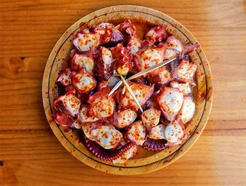
El pulpo cocido, cortado en rodajas y aliñado con aceite de oliva, pimentón y sal gruesa, es un plato asociado a las ferias gallegas, especialmente en la localidad de Carballiño.
ENSAIMADA
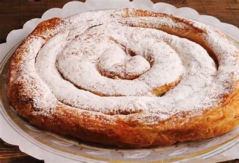
La ensaimada es un dulce tradicional de masa hojaldrada, elaborado con harina, azúcar, agua y manteca de cerdo. Es un símbolo de la repostería balear.
ROPA VIEJA

La ropa vieja es un guiso hecho a base de carne (res o pollo) desmenuzada, garbanzos y patatas, enriquecido con ajo, cebolla, pimientos y especias.
MENESTRA
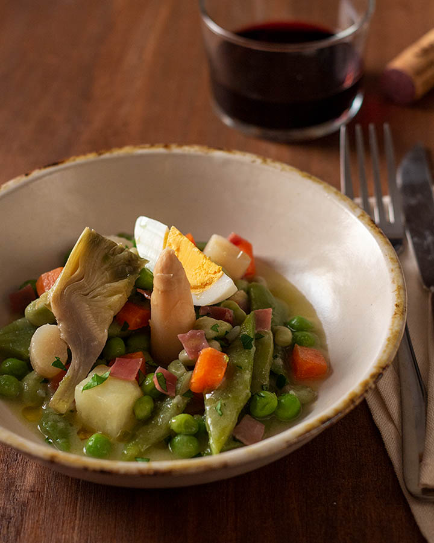
La menestra riojana es un guiso de verduras frescas, como alcachofas, guisantes, zanahorias y espárragos, cocidas y rehogadas con jamón serrano.
COCIDO MADRILEÑO
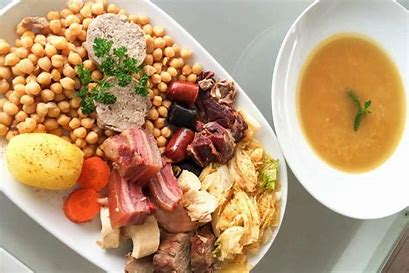
El cocido madrileño es un potaje de garbanzos acompañado de carnes, embutidos y verduras. Su origen se encuentra en la olla podrida medieval.
CALDERO DEL MAR MENOR

El caldero es un arroz meloso cocido con pescado de roca, pimientos y azafrán. Originario de los pescadores del Mar Menor.
PIMIENTOS DEL PIQUILLO RELLENOS
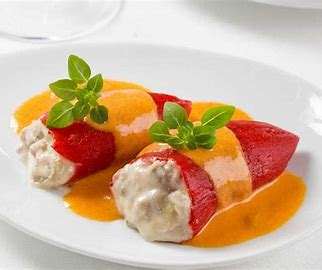
Los pimientos del piquillo, cultivados en Navarra, se rellenan habitualmente de carne, pescado o marisco. Este plato destaca por el sabor dulce y suave de los pimientos.
BACALAO AL PILPIL
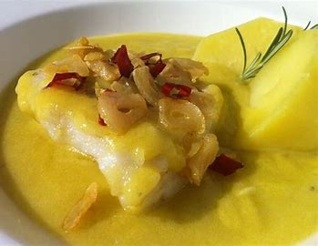
Este plato consiste en bacalao cocinado en una emulsión de ajo, aceite y guindilla. Es típico del País Vasco y es conocido por su textura suave y sabrosa.